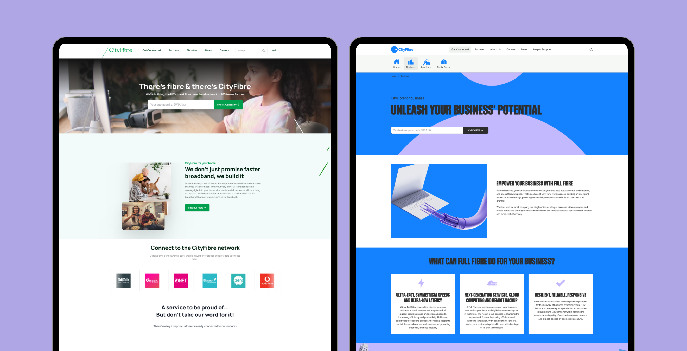
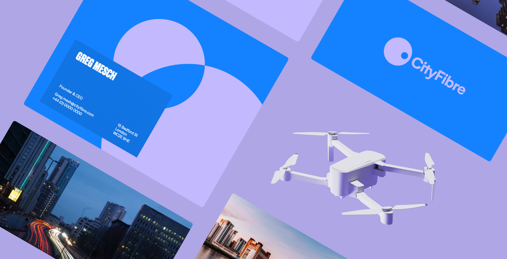
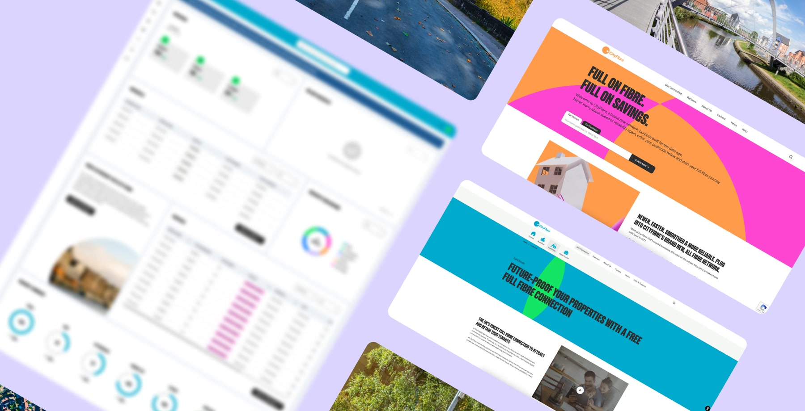

Problem Statement
CityFibre aimed to overhaul its digital image into something more contemporary, inclusive, and challenger. The goals were to enhance user experience, improve accessibility, and differentiate themselves from key industry players like Virgin Media and British Telecom.

Design Process
Rebranding & Redesign
My initial step was updating our design systems within Figma to align with CityFibre's latest brand guidelines. Following this, I redesigned each block of the website to ensure a consistent and eye-catching digital presence.
Research & Ideation
I thoroughly examined CityFibre's branding objectives to fully understand their vision. This insight empowered me to deliver a rebranding strategy that not only aligned with their vision but also made CityFibre distinguishable in a saturated market.
User Experience Improvements
Aiming to improve accessibility and usability, I managed to implement the brand's challenging neon-dominated colour scheme while adhering to AA standard accessibility. This balance ensured an engaging, user-friendly experience without compromising on design aesthetics.

Final Solution
The result was a comprehensive, accessible, and visually impressive redesign that aptly reflected CityFibre's modern ethos. The unique digital assets effectively distinguished CityFibre within a competitive industry landscape.
Impact & Results:
Improved Developer Handovers
My new design system significantly enhanced the quality of developer handovers. This was measured by our Jira 'right-first-time' rating, which tracks when a ticket moves end-to-end through the Kanban board on its first attempt, without errors or blockers. A high rating is a direct expression of good design handovers. Through my diligent effort to improve this process, we achieved a 95% right-first-time score, which led to smoother project implementation and reduced revisions.
Distinctive Brand Identity
The rebrand's vibrant colour scheme and contemporary aesthetics distinguished CityFibre, making it an eye-catching option for potential customers. Customers found CityFibre to standout much more than competitor products thanks to the vibrant and colourful rebranding.
Higher Conversion Rate
In addition to the rebrand, I included many UX journey improvements throughout the site, including improving key conversations through the websites postcode availability checker, which checks if people can have fibre broadband installed at their home. As a result of these changes, we increased conversions by over 90% in key areas thus providing business value for CityFibre partners.
Boost in Business Opportunities
As an important testament to the success of the rebrand, we gained new business opportunities, affirming the effectiveness of my design work.
Conclusion
Leading the CityFibre project highlighted the importance of an efficient and well-executed digital rebrand and performance optimisation. By building a design system compatible with our developer toolset (CraftCMS and Tailwind CSS), I was able to enhance both the development process and the final product. This project has significantly enriched my skillset as a product designer, equipping me to handle larger, more impactful projects in the future.